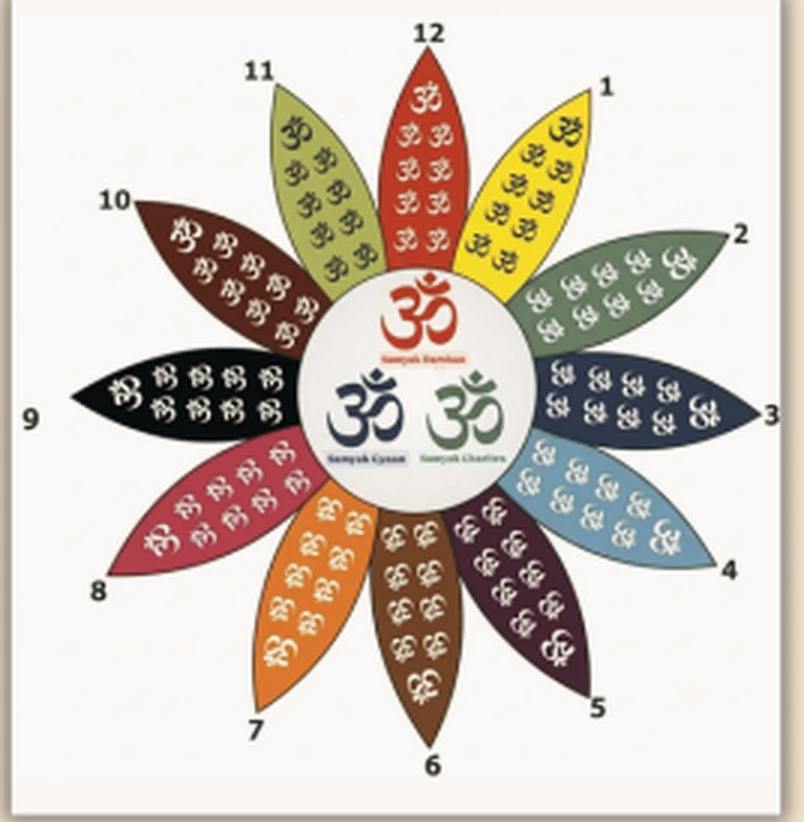

From Clock to Contemplation – From Clock to Rosary
In the sacred tradition of Jainism, a mala comprises 111 beads, a count deeply rooted in spiritual significance and philosophical truth. By chanting upon the 108 beads, a saadhak may attain guidance along the path to moksh. The 3 additional beads in the mala represent the Ratnatraya (Three Jewels):
- Samyak Darshan (Right Faith)
- Samyak Gyaan (Right Knowledge)
- Samyak Charitra (Right Conduct)
Together, all these beads offer gentle guidance to the seeker upon their sacred spiritual journey.
In this depiction, Samyak Darshan, Samyak Gyaan, and Samyak Charitra serve as the 3 hands of a clock. Surrounding them are 12 petals, each inscribed 9 times with the sacred syllable OM, enabling the seeker to complete 12 × 9 = 108 recitations. Reciting the mala through this contemplative design minimizes the likelihood of error.
